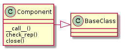
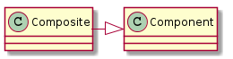

This is a module to hold classes that (loosely) implement the Composite Pattern. See the Ape Plugin for how the Composites are being used in the ape (it is implemented in the product property).
This is an auto-generated graph of the classes in this module.
This is the base-class which the other classes will inherit from. All Plugin products should look like this (it doesn’t do much but every method is called at some point by the Composites so all plugin products should implement it).

Component() |
A base-class for Composite and Leaf |
Component.__call__() |
abstractmethod that will be the main invocation when implememented |
Component.check_rep() |
abstract: Representation-check called by composite |
Component.close() |
abstractmethod: called for Keyboard Interrupts to allow file-closing |
This is an autogenerated version of the class-diagram.

Composite([error, error_message, ...]) |
A Composite to hold and execute Components | ||
Composite.components |
The list of components | ||
Composite.add(component) |
appends the component to self.components | ||
Composite.remove(component) |
Removes the component from the components (if it was there) | ||
Composite.__call__() |
The main interface – starts components after doing a check_rep | ||
Composite.__iter__() |
Iterates over the components | ||
Composite.__len__() |
Counts the components | ||
Composite.__getitem__(index) |
gets slice or index of components | ||
Composite.one_call(*args, **kwargs) |
|||
Composite.check_rep() |
Checks the representation invariant | ||
Composite.close() |
calls the close method on each component | ||
Composite.time_remains |
|
The Composite was created to be a generalization of the Hortator, Operator and Operations. By specifying the error that it will catch, the error message it will display if there is one, its components, and the component-category of its components, you specify what type of composite it is. It can also act as a regular composite to contain other parts, but this was the original use-case – to create the infrastructure for the APE.
- Each component call is wrapped by the try_except decorator which catches the Exception in self.error
- The default for
self.time_remainsis a TimeTracker but can also be a CountdownTimer